个人网站添加广告代码也能赚钱
百青藤就是一个广告联盟，我们可以在网站中悬挂百青藤平台提供的广告，进而获得百青藤给予的广告收益。
项目介绍
近期在网赚圈，这个项目非常火，不少培训机构更打出5000元至1万元的价格，来售卖此项目的操作方法，无疑又是一场割韭菜的盛宴。百度联盟的这次升级对于有流量的网站站长来说也是一个好消息，平台提升了广告点击单价，直观的增加了每月广告收益。自打2002百度联盟年上线，就有这样的一群人靠虚拟点击、虚拟流量来获取平台提供的广告展现收益，国外lead项目亦是如此，现在来看，不过是借着新平台“百青藤”的推出，又一次将作弊点击玩法推向了市面。这个项目的操作核心就是在伪造用户点击，来获取广告收益。
百青藤帐号注册、实名认证、审核技巧、网站搭建、广告投放、代码设置、点击方法、提升收益技巧、如何有效规避封号本项目需要一定的网站搭建经验和网站运营经验(运营经验针对正规玩法)，项目比较稳定，收益情况也比较客观(正常操作每天500-1000元或上不封顶)收益越高，风险也就越高，对应的审查就会越严格，新手推荐每天收益在500元左右即可。
项目周期：长期
网上的宣传语是“百青藤”不会倒闭就一直存在，也勉强说得过去。如果死磕这个项目的话，在平台更改规则之后，玩法做出相应的调整，也是可以保持长久有效的!
操作难度：中等
新手操作本项目需要先掌握一定的网站搭建技能，本篇文章会针对常见百青藤项目操作的常见问题，逐一提供解决方法，帮助你早日踏上赚钱之路!
适合工作室/个人：工作室
百青藤项目适合工作室放大操作，个人操作本项目每日收益可保持在200元-1000元(依个人能力、时间)
所需资源：
(IP代理软件、硬件修改器、缓存清理软件)
百青藤账户
域名(备案)
空间/服务器
建站程序
认证资料(SFZ)
提现资料(YHK)
硬件修改器
IP代理软件
缓存清理软件
收益情况：
每天点击50次左右大概一天收入能在500元-1000元，点击单价根据关键词不同。
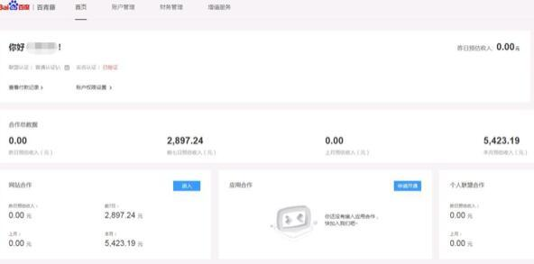
平台规则
通过持有的已备案域名搭建的网站提交申请注册百青藤平台，通过审核后，添加广告代码至网站，当广告有展现和点击时，根据关键词不同点击单价5-10元(下文有提高点击单价的方法)，广告收益每月25日结算至绑定银行卡!
操作流程
百青藤项目是需要网站才可以完成的，如果嫌本操作繁琐可以忽略本项目，本篇文章将百青藤网赚项目操作流程拆解分析，保障网赚新手也能很快看懂，并提供所使用到的工具，都会附在文章中提供下载!
一、搭建网站
搭建一个网站我们首先需要准备：域名、空间/服务器、建站程序，三者缺一不可!
1、首先我们需要购买一个域名并完成备案，也可以通过购买已备案域名，节省域名备案所需要的时间。
2、接下来需要购买空间/服务器，推荐使用阿里云的空间/服务器，价格便宜而且也能保证访问速度!
3、空间和服务器买好了，我们需要选择一款开源程序来搭建我们的网站。这里推荐Dedecms，简单、易用，当然你也可以选择其他的开源程序。
域名、空间/服务器、建站程序都准备好了，现在我们需要做的就是将我们的Dedecms通过FTP上传到我们的空间/服务器，并将域名指向空间/服务器，同时也要在空间/服务器中绑定域名。至此，我们的网站就做好了!
二、注册账号
网站搭建完成后，需要申请百青藤帐号，我们通过百度联盟来申请，这里使用个人版资料进行申请，有企业资质的还可以申请企业版，点击广告单价更高!有同学会问为什么要在百度联盟申请，而不在百青藤网站申请呢?这是因为百青藤是新平台，注册审核缓慢，百度联盟的申请机制比较完善，步骤也比较简单，帐号通过率更高!
第一步：填写网站信息
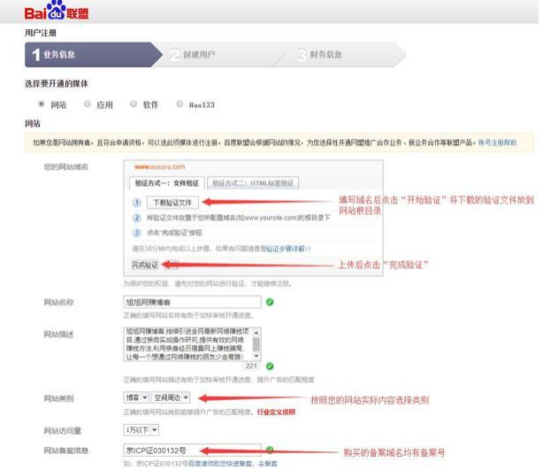
第二步：填写用户信息
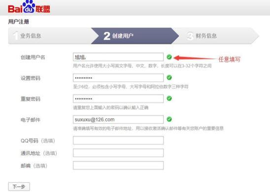
第三步：填写财务信息
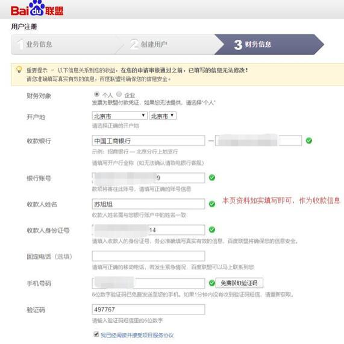
第四步：点击邮箱链接，确认后等待审核(一天内答复)
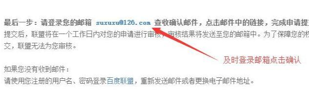
三、悬挂广告
等待账户审核通过之后我们进入百青藤后台---网盟推广---代码位管理---新建代码位，来创建代码，并将代码放置到网站对应的位置中。有细心的同学就问，到底创建多少个代码位才安全?根据你网站的内容数量和页面层级，一般创建20-35个代码位比较合适。
四、点击广告
广告代码成功嵌入网站后，我们就需要等待一两天的时间，这段时间用来充实网站内容、为网站刷流量，我们可以在后台看到广告代码数据的更新。
1、使用IP代理软件进行代理IP
第一步：打开我们的IP代理软件
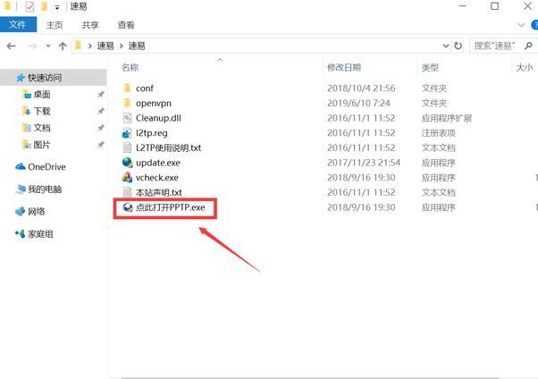
第二步：打开VPN后会显示如图一下画面，VPN可以连接我们任何想要链接的城市。一般我们会链接北上广深，这样子我们点击的竞价会高很多。
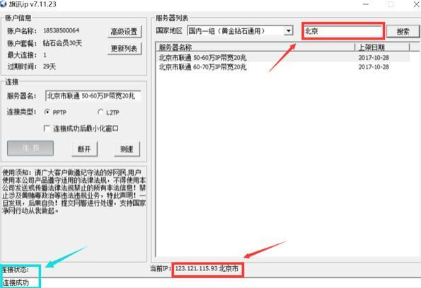
2、清除电脑使用缓存、浏览器缓存
第一步：打开CC清理工具

第二步：我们点击红色的框按钮进行清理C盘。一般一次清理为零。
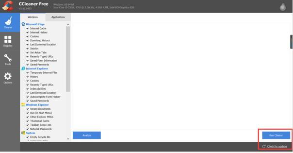
3、设置301跳转
C:\WINDOWS\system32\drivers\etc 中有个hosts文件，用记事本打开，文件里面最后加入地址就可以了，例如:127.0.0.1 www.XXXXX.com
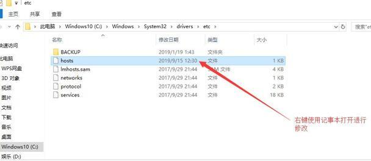
4、搜索广告关键词，让网站自动推送相关广告
第一步：我们打开UC浏览器(不一定非要是UC浏览器，只是UC浏览器非常的方便便捷)
第二步：打开UC之后我们首先要做的事清理UC浏览器里的历史记录。
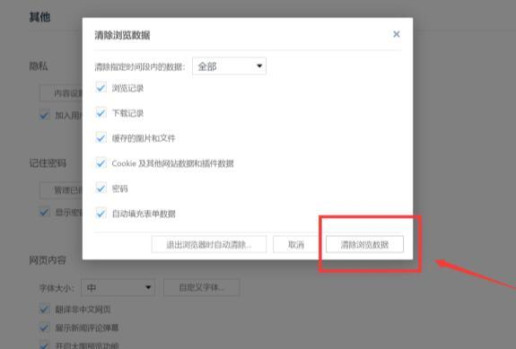
第三步：输入自己的网站域名访问
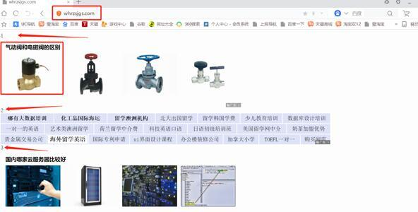
第四步：百度搜索关键词
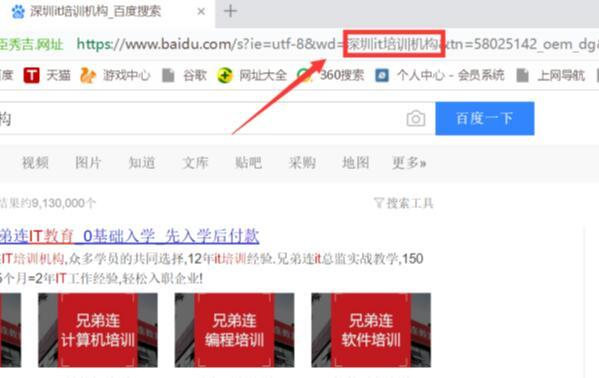
第五步：选择IP对应地区的高价关键词搜索
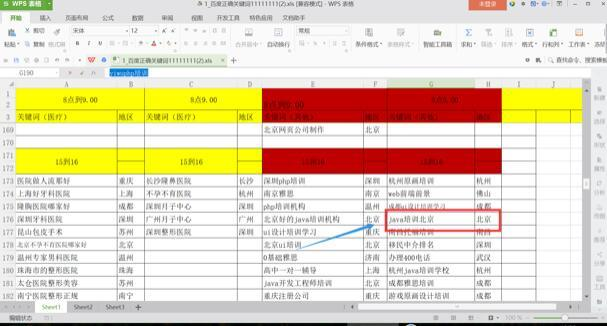
第六步：随机打开几个页面带“V”和广告标志的
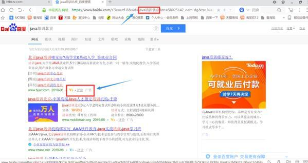
第七步：随便点击几个页面显示为“百度快照”网站
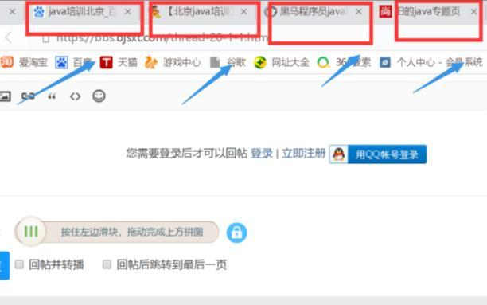
5、进入网站进行点击
进入自己网站点击刷新，并点击一个广告
6、循环以上操作
按顺序执行以上几步操作，根据网站流量，合理安排点击次数!
五、等待结算
以上四步操作完成之后就等待每月5日百青藤出上个月的账单，每月25日的时候广告费用就会自动打款到你申请账户时填写的银行卡了。
几年前都不玩的东西了，刷量必封，且无法提现！别问我咋知道，因为我就那样干过，现在还在百度联盟黑名单！
额，有人工巡检的，一般会拒绝结算 。